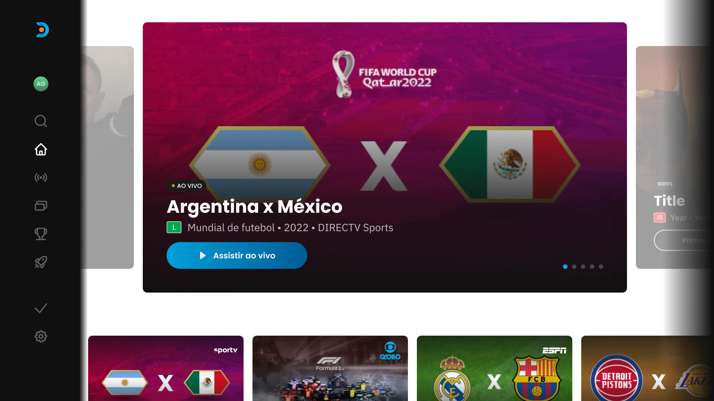
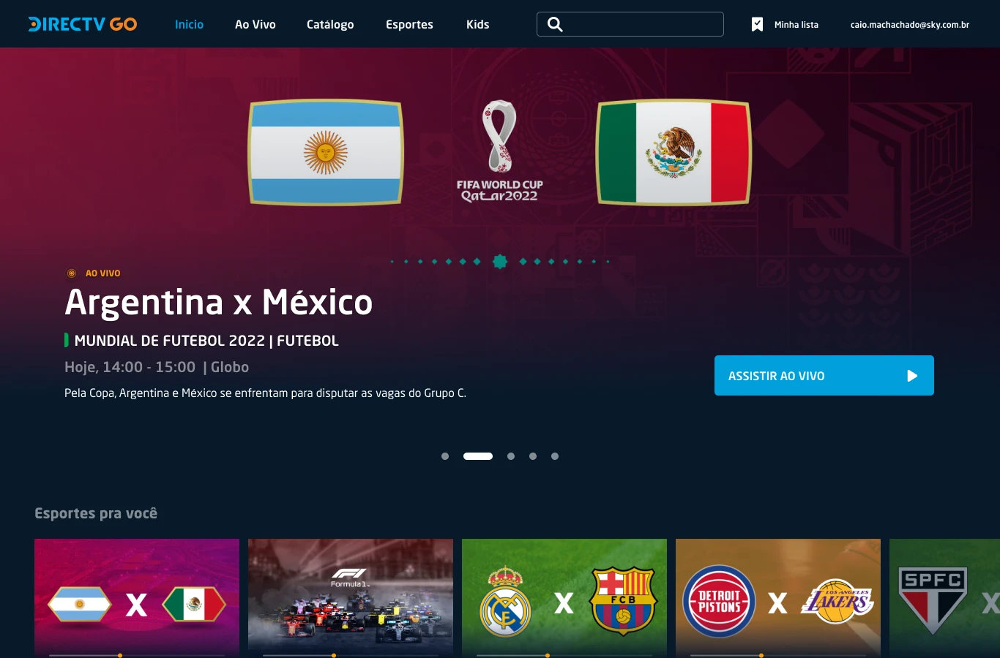
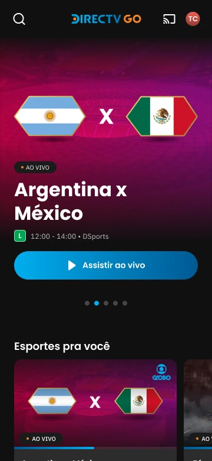

Sports Experience
Um hub multiplataforma para a Copa do Mundo de 2022 — mobile, web e TV reunidos numa só experiência, com estatísticas da FIFA em tempo real e recortes próprios para o Brasil e a América Latina. A multiplatform hub for the 2022 World Cup — mobile, web and TV brought into one experience, with real-time FIFA statistics and dedicated cuts for Brazil and Latin America.
Resultados-chaveKey results
- 3 Plataformas — mobile, web e TV — num só hubPlatforms — mobile, web and TV — in one hub
- 2 Versões regionais — Brasil e América LatinaRegional versions — Brazil and Latin America
- 64 Partidas cobertas ao vivo com dados da FIFAMatches covered live with FIFA data
- 100% Entrega on-time para a estreia, sem slip críticoOn-time delivery for kick-off, no critical slip
Uma experiência, três telasOne experience, three screens
Do celular à TV, passando pela web e pelas telas de estatística: a mesma linguagem visual da Copa do Mundo de 2022, com dados oficiais da FIFA em tempo real. From phone to TV, through the web and the statistics screens: one visual language for the 2022 World Cup, with official real-time FIFA data.


Um hub central da DirecTV para a Copa de 2022 no Qatar, com 2 versões regionais (Brasil e América Latina), 3 plataformas (mobile, web e TV) e dados oficiais da FIFA em tempo real, numa experiência integrada. DirecTV's central hub for the 2022 World Cup in Qatar, with 2 regional versions (Brazil and Latin America), 3 platforms (mobile, web and TV) and official FIFA data in real time, in one integrated experience.
O Sports Experience foi criado para ser a casa da Copa dentro da DirecTV GO: transmissão ao vivo e sob demanda, calendário detalhado, estatísticas de times e jogadores e acompanhamento de resultados. Cada funcionalidade foi adaptada para render bem em cada dispositivo, respeitando as particularidades de interação de mobile, web e TV. Sports Experience was built to be the home of the World Cup inside DirecTV GO: live and on-demand streaming, a detailed calendar, team and player statistics, and result tracking. Each feature was adapted to perform on every device, respecting the interaction particularities of mobile, web and TV.
A integração com a FIFA foi essencial para o acesso a dados oficiais em tempo real e a precisão das informações. O desenvolvimento priorizou consistência visual e funcional entre as plataformas, otimizando a experiência conforme as características de cada meio — e foi disponibilizado a todos os assinantes durante o torneio, incluindo novos usuários. Integration with FIFA was essential for real-time access to official data and information accuracy. Development prioritized visual and functional consistency across platforms, optimizing the experience per medium — and it was made available to all subscribers during the tournament, including new users.
A questãoThe question
Como fazer três variáveis — um prazo inegociável, dois recortes regionais e dados que mudam a cada segundo — convergirem numa só experiência, em três telas?How do you make three variables — a non-negotiable deadline, two regional cuts and data changing every second — converge into one experience, across three screens?
- Prazo inegociávelNon-negotiable deadline A estreia da Copa ditava o cronograma. Não havia como adiar a bola rolar — o produto precisava estar no ar antes do apito inicial.Kick-off dictated the schedule. There was no delaying the first whistle — the product had to be live before it blew.
- Dois recortes regionaisTwo regional cuts Brasil e América Latina, cada um com restrições legais próprias. Onde faltava uma feature, era preciso reorganizar o conteúdo sem perder qualidade.Brazil and Latin America, each with its own legal restrictions. Where a feature was missing, content had to be reorganized without losing quality.
- Dados em tempo realReal-time data O volume e o formato dos dados da FIFA variavam. Telas pequenas quebravam com o inesperado — os componentes tinham que absorver a volatilidade.The volume and shape of FIFA data varied. Small screens broke on the unexpected — components had to absorb the volatility.
Somava-se a isso a coordenação constante com múltiplas empresas externas. O alinhamento frequente com a FIFA foi decisivo: reuniões recorrentes sincronizavam dados e permitiam implementar mudanças com rapidez — mantendo o produto atualizado e em conformidade com os padrões oficiais.On top of that came constant coordination with multiple external companies. Frequent alignment with FIFA was decisive: recurring meetings synced data and let us ship changes fast — keeping the product current and compliant with official standards.
Atuei como Senior Product Designer e como elo entre design, desenvolvimento e dados — coordenando três casas em torno de uma só entrega.I worked as Senior Product Designer and as the link between design, development and data — coordinating three houses around a single delivery.
A gestão de relacionamentos e expectativas foi central. Participei de reuniões e apresentações regulares com stakeholders e times técnicos — apresentando avanços, coletando feedback e negociando ajustes. Essa comunicação constante manteve o projeto dentro do escopo e do cronograma, com gestão ágil das necessidades do cliente e adaptação rápida a mudanças emergenciais.Managing relationships and expectations was central. I took part in regular meetings and presentations with stakeholders and technical teams — showing progress, gathering feedback and negotiating adjustments. This constant communication kept the project on scope and on schedule, with agile handling of client needs and fast adaptation to emergent changes.
Um Design System unificado para mobile, web e TV, com componentes de estatística preparados para a volatilidade do dado ao vivo e para a reorganização regional — sem perder a consistência visual.A unified Design System for mobile, web and TV, with statistics components ready for live-data volatility and regional reorganization — without losing visual consistency.
As três telas, um só sistemaThree screens, one system
A mesma linguagem de mobile a TV, adaptando densidade, toque e distância de leitura a cada meio. Escolha uma tela para ver a home em cada plataforma.One language from mobile to TV, adapting density, touch and reading distance to each medium. Pick a screen to see the home on each platform.



No bolsoIn the pocket
O placar ao vivo, a escalação e as estatísticas cabem numa tela estreita. Cada componente foi pensado para tolerar dados voláteis sem quebrar o layout.The live score, lineup and stats fit a narrow screen. Every component was built to absorb volatile data without breaking the layout.
Na mesaAt the desk
Mais espaço para densidade: perfis de seleção e jogador, histórico e estatísticas agregadas convivem numa leitura confortável de desktop.More room for density: team and player profiles, history and aggregate stats live together in a comfortable desktop read.
Na salaIn the living room
A home ganha a tela grande — menu lateral fixo, herói da partida em destaque e trilhos de conteúdo, com tipografia e contraste calibrados para a distância de leitura de dez pés.The home takes the big screen — a fixed side menu, a featured match hero and content rails, with typography and contrast calibrated for ten-foot reading distance.
A vitrine de componentesThe component vitrine
Card ao vivo. O cartão de partida com placar, tempo e estatísticas — o componente mais volátil do sistema. Nove estados cobrem pré-jogo, ao vivo, intervalo e encerrado, em cada recorte regional.The match card with score, clock and stats — the system's most volatile component. Nine states cover pre-match, live, half-time and finished, in each regional cut.


Estados do cartão de partida ao vivo · Design System Sports ExperienceLive match-card states · Sports Experience Design System
Classificação. A tabela de grupos e a chave de mata-mata. Precisa comportar oito grupos, empates e critérios de desempate sem reflow — a mesma estrutura serve mobile, web e TV.The group table and knockout bracket. It must hold eight groups, ties and tie-break criteria without reflow — one structure serving mobile, web and TV.


Tabela de classificação por grupo · estadosGroup standings table · states
Ações em campo. Micro-componente para eventos da partida — gol, cartão, substituição. Legível a poucos centímetros no celular e a três metros na TV, com o mesmo desenho.Micro-component for match events — goal, card, substitution. Legible inches away on a phone and meters away on TV, from the same design.


Componente de ações do jogador em campo · estadosPlayer on-pitch action component · states
Card 2×3. O cartão de partida em estado inativo, base do calendário e das listas. Proporção fixa que empacota bem em grades densas e sobrevive à reorganização regional.The match card in its inactive state, the base of the calendar and lists. A fixed ratio that packs well into dense grids and survives regional reorganization.


Card de partida 2×3 (inativo) · estados2×3 match card (inactive) · states
Trabalhar ao mesmo tempo com DirecTV, FIFA e Accenture, sob um prazo inflexível, foi uma aula de priorização e de alinhamento de expectativas. Working with DirecTV, FIFA and Accenture at once, under an inflexible deadline, was a lesson in prioritization and expectation-setting.
Um panorama do produto ao vivo — da home do hub ao perfil de jogador, passando pelo calendário, pela classificação e pela visão multiplataforma. Clique em qualquer prancha para ampliar.A panorama of the live product — from the hub home to the player profile, through the calendar, standings and the multiplatform view. Click any plate to enlarge.
 Pl. i Home do hub no mobileHub home on mobile
Pl. i Home do hub no mobileHub home on mobile
 Pl. ii Detalhe da partidaMatch detail
Pl. ii Detalhe da partidaMatch detail
 Pl. iii Calendário e fasesCalendar and stages
Pl. iii Calendário e fasesCalendar and stages
 Pl. iv Perfil de seleçãoTeam profile
Pl. iv Perfil de seleçãoTeam profile
 Pl. v Ao vivo, com estatísticaLive, with statistics
Pl. v Ao vivo, com estatísticaLive, with statistics
 Pl. vi Perfil de jogadorPlayer profile
Pl. vi Perfil de jogadorPlayer profile
 Pl. vii Visão multiplataforma — mobile, web e TVMultiplatform view — mobile, web and TV
Pl. vii Visão multiplataforma — mobile, web e TVMultiplatform view — mobile, web and TV
O MVP foi entregue no prazo para a estreia da Copa, sem desvios de escopo críticos, aprovado pelos stakeholders da DirecTV e disponibilizado para toda a base de assinantes durante o torneio.The MVP shipped on time for kick-off, with no critical scope slips, approved by DirecTV stakeholders and made available to the entire subscriber base during the tournament.
A apresentação final foi recebida com entusiasmo. A demonstração das funcionalidades — com o layout responsivo garantindo navegação fluida em qualquer tela — evidenciou o potencial do hub como casa completa da Copa. Os objetivos iniciais foram cumpridos: uma experiência rápida e intuitiva, consistente e de qualidade em todas as plataformas.The final presentation was met with enthusiasm. The feature demo — with responsive layout ensuring fluid navigation on any screen — showed the hub's potential as a complete World Cup home. The initial goals were met: a fast, intuitive experience, consistent and high-quality across every platform.


Materiais complementares — o estudo cromático do Design System, telas auxiliares, detalhes de componentes e até explorações descartadas por restrições regulatórias. Fora do fluxo principal, mas parte do escopo real do trabalho.Complementary materials — the Design System's chromatic study, auxiliary screens, component details, and even explorations dropped for regulatory reasons. Outside the main flow, but part of the work's real scope.
 Estudo cromático · paleta do sistemaChromatic study · system palette
Estudo cromático · paleta do sistemaChromatic study · system palette
 Panorama do Design SystemDesign System panorama
Panorama do Design SystemDesign System panorama
 Variações de cor nos cardsColor variations on cards
Variações de cor nos cardsColor variations on cards
 Perfil do jogadorPlayer profile
Perfil do jogadorPlayer profile
 Mapa de calorHeatmap
Mapa de calorHeatmap
 Probabilidades — descartada (Brasil)Probabilities — dropped (Brazil)
Probabilidades — descartada (Brasil)Probabilities — dropped (Brazil)
Todos os dados e métricas exibidos nas imagens são fictícios, gerados apenas para fins de demonstração. Não refletem informações reais da empresa ou de suas operações.All data and metrics shown in the images are fictitious, generated for demonstration only. They do not reflect real company information or operations.
Esta prancha foi composta pelo autor em MMXXII, a partir do trabalho de design do Sports Experience da DirecTV para a Copa do Mundo de 2022. As telas e números servem como espécime conceitual de design de produto multiplataforma e Design System, mantidos os parâmetros de confidencialidade acordados. This plate was set by the author in MMXXII, drawn from the design of DirecTV's Sports Experience for the 2022 World Cup. The screens and figures serve as a conceptual specimen of multiplatform product design and Design System work, under the agreed confidentiality terms.
Finis · fim da pranchaFinis · end of plate